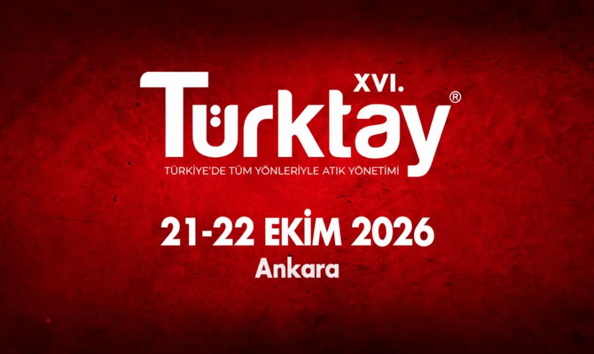

XVI. TÜRKTAY – Türkiye'de Tüm Yönleriyle Atık Yönetimi Paneli
Atık yönetimi, döngüsel ekonomi ve geri dönüşüm sektörünün en önemli buluşması 21-22 Ekim 2026'da Ankara'da.
21-22 Ekim 2026Devam ↗
Atık aküler, Türkiye genelindeki lisanslı toplama, taşıma ve geçici depolama noktaları üzerinden teslim alınır.
Toplanan akümülatörler çevre izin ve lisansı bulunan tesislerde işlenerek ekonomiye yeniden kazandırılır.
APAK yönetmeliği, GEKAP ve depozito usul-esaslarına tam uyum; Bakanlık onaylı Atık Akümülatör Yönetim Planı.
Akümülatör ithalatçısı ve üreticisi firmaların atık akümülatör yükümlülükleri; toplama, taşıma, geri kazanım, depozito uygulaması, etiketleme ve bildirim başlıklarından oluşur. Bu başlıkların tamamını üyelerimiz adına tek bir sistem içinde yönetiyor, Bakanlık onaylı Atık Akümülatör Yönetim Planı kapsamında raporluyoruz.
Çevre Uyum Onayı, GEKAP beyanı ve raporlama tarihleri bugüne göre sıralanır.
Atık akümülatör toplama, taşıma ve geri kazanımında yetkilendirilmiş çözüm ortaklarımızı ve asil üyelerimizi harita üzerinden il bazında görüntüleyin.
Piyasaya sürülen akümülatörün ömrünü tamamlamasından geri kazanımına kadar izlenen dört temel adım.
Depozitolu olarak satılan akümülatör, faturada ayrı kalem olarak gösterilir ve etiketlenir.
Kullanıcı atık aküyü satış noktası, bayi veya bakım-onarım yerine iade eder, depozitosunu geri alır.
Lisanslı araçlarla, MOTAT sistemi üzerinden bildirim yapılarak geçici depolama ve işleme tesisine taşınır.
Kurşun, plastik ve asit geri kazanılır; her ay kütle denge raporu ile kayıt altına alınır.

Atık yönetimi, döngüsel ekonomi ve geri dönüşüm sektörünün en önemli buluşması 21-22 Ekim 2026'da Ankara'da.
2024/1 sayılı Tebliğ ile yeniden değerleme oranına göre belirlenen tutarlar ve depozito bedelleri.
Üye firmaların Çevre Uyum Onayları, TAREKS başvuruları ve kütle denge raporları için takvim ve evraklar.
Akümülatör ithalatı ve üretimi yapan 111 asil üyemiz, atık akümülatör yönetiminde ortak sorumluluğu paylaşıyor.